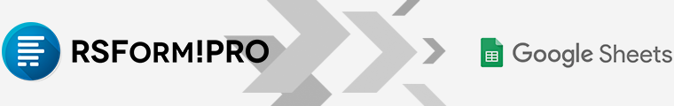
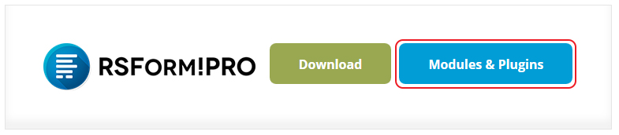
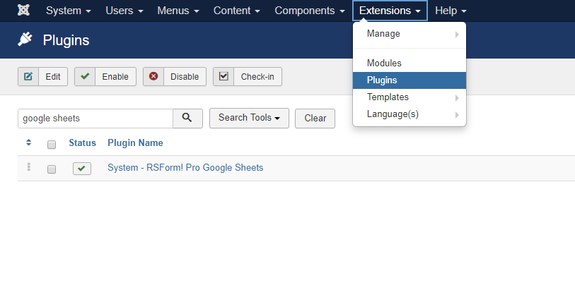

Formulierinzendingen vanuit de mail handmatig overnemen naar een spreadsheet,
of
formulierinzendingen direct ontvangen in een spreadsheet.

Google Sheets
een betaalde plugin voor RSForm!Pro van RSJoomla.
Download de plugin
Deze betaalde plugin kun je downloaden via je RSJoomla account > My Downloads > RSForm!Pro - Modules
& Plugins > Plugins > "Google Sheets".

Plugin installeren
- Joomla administrator > Extensies > Beheer > Installeren.
- Joomla administrator > Extensies > Plugins en zoek op "System - RSForm! Pro Google Sheets"
plugin.

Verbinden met Google Sheets
Volg stappenplan
https://www.rsjoomla.com/support/documentation/rsform-pro/plugins-and-modules/plugin-google-sheets.html
- Ga naar Google Developers Console.
- Log in met je Google-account en maak een nieuw project aan.
- Voeg een projectnaam, organisatie, locatie toe en klik op de knop "Maken" (wacht
even nadat u op de knop Aanmaken hebt geklikt om uw project te laden, anders kunt u het
handmatig selecteren).
- Zoek in de Dashboard-weergave naar 'Google Spreadsheets API' en open deze.
- Schakel de "Google Spreadsheets API" in door bovenaan op de knop "Inschakelen"
te klikken.
- Klik op "Inloggegevens" in de linkerzijbalk.
- Klik op de knop "Toestemmingsscherm configureren".
- Voer een applicatienaam in (bijvoorbeeld: RSForm!Pro Google Spreadsheets) en klik op Opslaan
- Klik vervolgens op de knop "Inloggegevens maken" en selecteer de optie
"OAuth-client-ID".
- Selecteer "Webapplicatie" en voeg een Naam toe.
- Voeg binnen de "Geautoriseerde JavaScript-oorsprong" uw website toe
(bijvoorbeeld: https://www.rsjoomla.com). Als je op localhost bent, kun je dit leeg laten.
- Voeg binnen de "Authorized redirect URI's" de reeds gegenereerde URL toe die
gevonden is via backend > Componenten > RSForm!Pro > Configuratie > Google Spreadsheets >
"Redirect URI".
- Klik op de knop Maken.
- Nu worden er twee sleutels gegenereerd, client-ID en clientgeheim dat u in uw installatie moet
plaatsen binnen backend > Componenten > RSForm!Pro > Configuratie > Google Spreadsheets >
"Google Client-ID" respectievelijk "Google Secret"-velden.
- Gebruik de bovenste "Opslaan"-knop om uw sleutels op te slaan (deze moeten
eerst worden opgeslagen).
- Nadat de pagina is vernieuwd, vindt u een nieuwe knop "Authenticeren" waarop u
moet klikken. Als u dit doet, wordt u doorgestuurd naar Google om uw Google-account te kiezen en
wordt u gevraagd de toepassing toe te staan.
- Als u op de knop Toestaan klikt, wordt u teruggeleid naar uw website waar een succesvolle groene
"Toegangstoken succesvol is opgeslagen!" bericht zou moeten verschijnen als
alles correct was geconfigureerd. Uiteindelijk zul je zien dat er meer gegevens worden
gespecificeerd op het tabblad Google Spreadsheets van je RSForm!Pro-configuratie, maar het is
niet nodig om hier verder iets te wijzigen.
Mapping aanmaken voor data
Volg stappenplan
https://www.rsjoomla.com/support/documentation/rsform-pro/plugins-and-modules/plugin-google-sheets.html
- Open uw formulier in de backend > Componenten > RSForm!Pro > Formulieren beheren > uw formulier
> Formuliereigenschappen > tabblad Google Spreadsheets-instellingen.
- Schakel de optie 'Google Spreadsheets gebruiken' in.
- Als de optie 'Blad bijwerken wanneer betaling is voltooid' is ingeschakeld,
wordt de Google-spreadsheet pas bijgewerkt nadat de betaling is bevestigd met behulp van de knop
'Betaling bevestigen' tijdens het bewerken van de inzending. Het bevestigen van
een betaling wordt gebruikt wanneer de gateway deze om de een of andere reden niet heeft
bevestigd of bij gebruik van overboekingsmethoden waarbij de betaling handmatig door u is
bevestigd.
- Bij het inschakelen van 'Toon API-berichten' worden de foutmeldingen
weergegeven bij verzending.
- Voeg uw "Spreadsheet-ID" toe. Dit kan de exacte ID van uw spreadsheet zijn of
de volledige URL (meer details hieronder).
- Klik op de bovenste knop Opslaan (dit moet eerst worden opgeslagen om uw bladen
en hun kolommen op te halen).
- Als uw spreadsheet meerdere bladen heeft, kunt u het gewenste blad selecteren in de
vervolgkeuzelijst 'Bladnaam'.
- Ten slotte, als uw blad kolommen heeft, zijn deze beschikbaar voor u om in kaart te brengen met
de gegevens van uw formulier. Er is ook een tijdelijke aanduiding-selector voor elke kolom die
kan worden gebruikt om de benodigde tijdelijke aanduiding van uw formulier op te nemen.
Spreadsheet-ID vinden
- ga naar Google Spreadsheets.
- toegang tot uw spreadsheet.
- let op de URL van de bovenste browser. Bijvoorbeeld:
- https://docs.google.com/spreadsheets/d/UkFHSrjrhN9TzRRp47fr4JFJSA83rjFH1eFGr438v4/
- gebruik de URL of neem de ID van de URL, in dit geval is de ID de volgende:
- UkFHSrjrhN9TzRRp47fr4JFJSA83rjFH1eFGr438v4